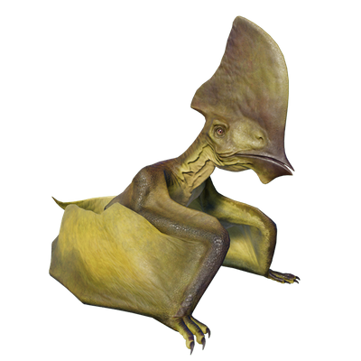

Useful Website
Easily recognised thanks to its unique appearance, Tapejara is a genus of Pterosaur native to Brazil with a brightly coloured crest on top of its head that could grow up to a metre in length, helping it to attract mates. Its wingspan of around 4m makes it one of the smaller Pterosaurs, while the name Tapejara translates to ‘old being’.
